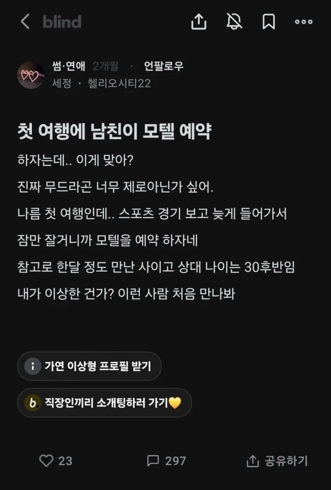
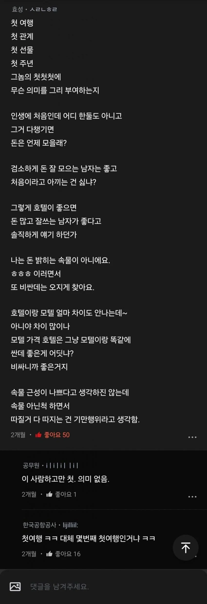

진심으로 아내도 아니고 연애 중에 저런다고?
장기연애해서 서로 편한 단계면 애초에 블라이드에 글을 안쓰고
저건 남자 쪽이 더 사랑하거나 반반인데
섹스통
별로임 가오도없나
중고품 팔면서 왜 미개봉신제품 가격을 받으려함??
자긴 처녀인가 ;;
몇번째 처음타령이냔 말이다 ㅋㅋ
30대 후반에 무조건 호텔 가야하면 40대 후반되면 건물 하나 통으로 빌려야 하냐?
그럼 어디든 가도 되니까 떡볶이집에서 데이트하고 편의점 컵라면으로 외식하고 그러삼 ㅋㅋㅋ 여자 쪽에서 애지간히 사랑하는거 아니면 일반적으로는 다 떨어져나가지
시즌235184741번째 첫여행
무슨 세상에 사시는건지...